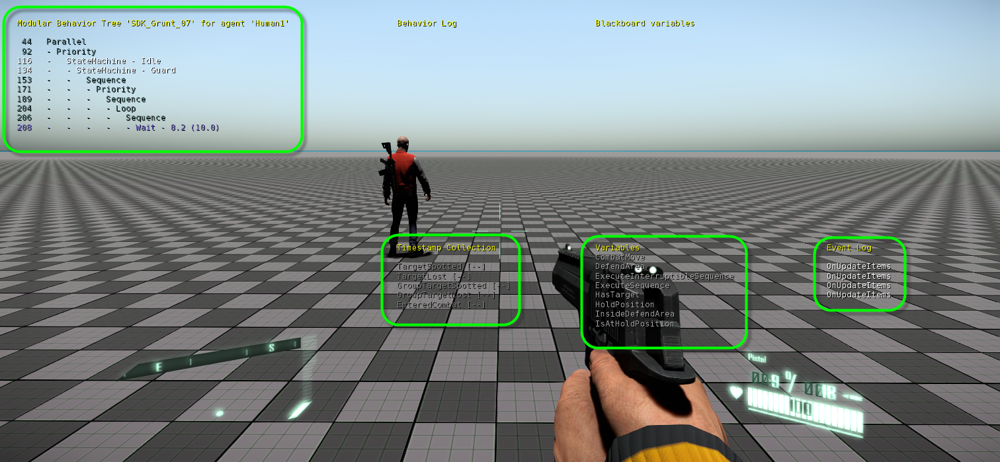
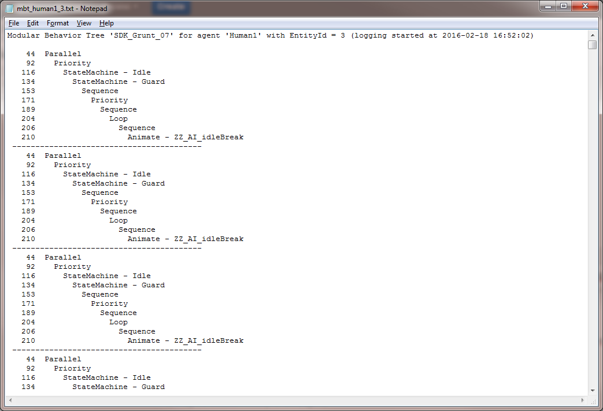

Overview
There are 2 ways to debug an MBT:
- In-game visualization: displays its currently executing branches of a specific AI character in game
- Execution history: logs the execution stacks for a specific or all AI characters
In-game visualization
Use the Slash-Key ("/") on the keyboard or the cvar "ai_DebugAgent centerview" to see what parts of the tree are currently executing in the AI character that is closest to the camera:
- Currently active branches of the MBT
- The MBT's timestamps
- The MBT's variables
- Events that occurred recently

The numbers next to the currently active branches are the according line numbers in the XML file.
The Slash-Key is just a shortcut for entering "ai_DebugAgent centerview" and is only implemented as such in the GameSDK DLL.
Execution history
The execution history facility allows for writing the execution stacks on a frame-by-frame basis to log files. It's controlled by the cvar:
"ai_LogModularBehaviorTreeExecutionStacks 0/1/2":
- 0 = do not log
- 1 = log the execution history only for the agent that is currently debugged (c. f. cvar "
ai_DebugAgent centerview") - 2 = log the execution history for all AI agents
The log files are plain text files that get written to the directory .\user\mbt_logs.
Each AI agent will store his execution history in a separate file that is named according to his entity name and entity ID (e. g. "mbt_human1_3.txt" will refer to the AI agent named "Human1" whose EntityID = 3).
The content of each log file looks like this:
